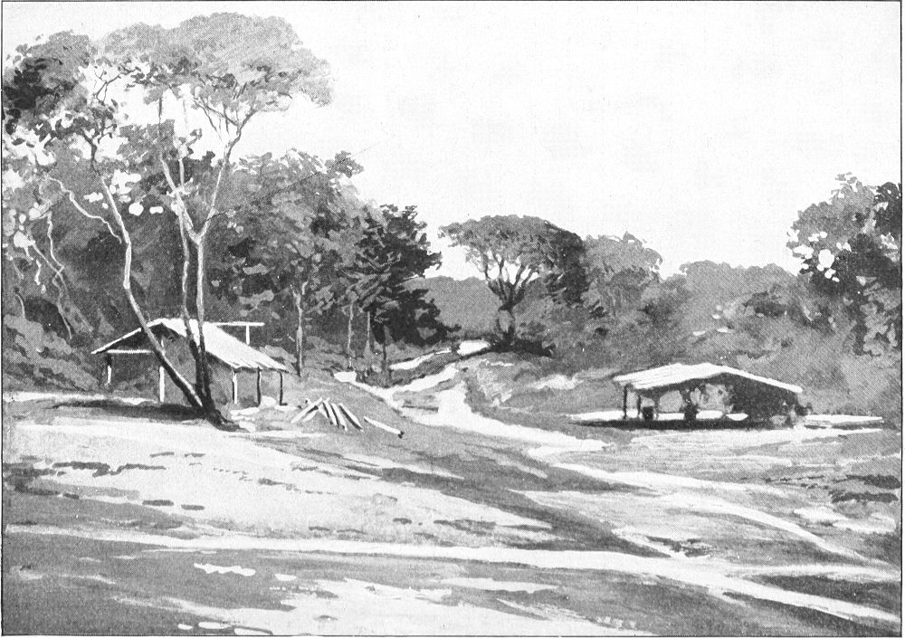
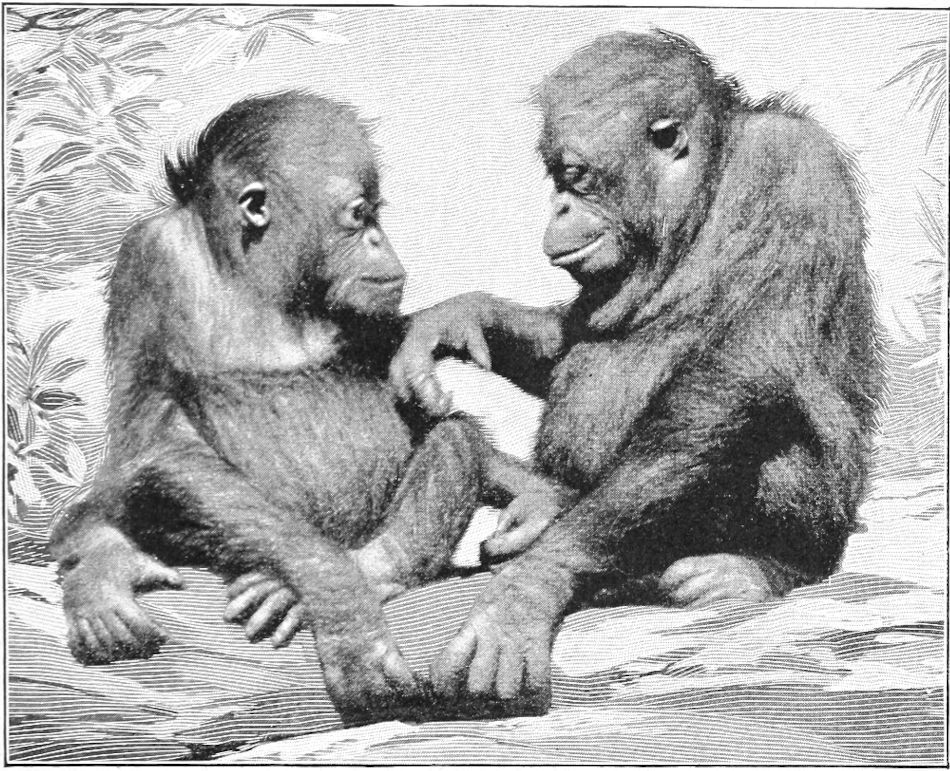

Other Apes—The Apes in History—Habitat—The Orangs—The Gibbon
In the various records that constitute the history of these apes are found many novel and incoherent tales, but most of them appear to rest upon some basis of truth. In order to arrive at a more definite knowledge concerning them, we may review the data at our command.
In the annals of the world, the first record that alludes to these manlike apes is that of Hanno, who made a voyage from Carthage to the west coast of Africa, nearly five hundred years before the Christian era. He described an ape which was found in the locality about Sierra Leone. It is singular that the description which he gave of those apes should coincide so fully with the apes known at the present day; but it is quite certain that the apes of which he gave an account were neither gorillas nor chimpanzees. There is nothing to show that either of these apes ever occupied that part of the world, or that any similar type has done so.
The ape described by Hanno was certainly not an anthropoid, but a large dog-faced monkey or baboon, technically called cynocephalus. These animals are found all along the north coast of the Gulf of Guinea, but there is no trustworthy evidence of any true ape living north of Cameroon valley. The river that waters it empties into the sea about four degrees north of the equator. Here begins the first trace of the chimpanzee. As we pass along the windward coast, casual reports are current to the effect that gorillas and chimpanzees occupy the interior north of there; but when these reports are sifted down to solid facts, it turns out to be a big baboon or a monkey upon which the story rests. Its likeness to man, as described by Hanno, was doubtless the work of fancy, and the name troglodytes which he gave to it shows that he knew but little of its habits, or cared but little for the exactness of his statements.
The account given by Henry Battel, in 1590, contains a thread of truth woven into a web of fantasy. He must have heard the stories he relates, or seen some specimens along the coast north of the Congo. There are certain facts which point to this conclusion. The name pongo which he gave to one of them belongs to the Fiote tongue, which is spoken by the native tribes around Loango. Those people use the name, and it is commonly understood to be synonymous with the name njina, used by the tribes north of there. It is always applied to the gorilla. To me, however, it appears to coincide with the name ntyii, as used by the Esyira people for another ape, which is described in the chapter devoted to gorillas. It was from Loango that Dr. Falkenstein, in 1876, secured an ape under that name. It is singular that Baron Wurmb, in 1780, makes use of the name pongo for an orang. I have not been able to learn where he acquired this name, but it appears to be a native Fiote name for more than four hundred years, and the history of their language is fairly well known.
The name enjocko, given by Battel to another ape, is beyond a doubt a corruption of the native name ntyigo (ntcheego), and this name belongs north of the Congo from Mayumba to Gaboon. He may have inferred that these apes occupied Angola, but there is not a vestige of proof that any ape exists in that part of Africa. Even the native tribes of that part have no indigenous name for either of these apes. Other parts of his account are erroneous, and while he may have believed that these apes “go in bodies to kill many natives that travel in the wood,” and the natives may have told him such a thing, the apes do not practice such a habit. With all their sagacity, they have no idea of unity of action. If a band of them were attacked, they would no doubt act together in defense, but it is not to be believed that they ever preconcert any plan of attack. Neither do these apes ever assault an elephant. He is the one animal they hold in mortal dread. I have incidentally mentioned elsewhere the conduct of my two kulus on board the ship when they saw a young elephant. Chico, the big ape that has also been mentioned, was often vicious and stubborn. Whenever he refused to obey his keeper or became violent, an elephant was brought in sight of his cage. On seeing it he became as meek as a lamb and showed every sign of the most intense fear. Mr. Bailey himself told me of the dread both of his apes had of an elephant. Battel was also wrong in the mode he described of the mother carrying her young, and that of the apes in using sticks and clubs.
The ape known as Mafuka, which was exhibited in Dresden in 1875, was also brought from the Loango coast, and it is possible that this is the ape to which the native name pongo really belonged. This specimen in many respects conforms to the description of the ntyii given, but the idea suggested by certain writers that Mafuka was a cross between the gorilla and the chimpanzee is not, to my mind, a tenable supposition. It would be difficult to believe that two apes of different species in a wild state would cross, but to believe that two that belonged to different genera would do so is yet more illogical. I may state, however, that some of the Esyira people advance such a theory concerning the ntyii, but the belief is not general, and those best skilled in woodcraft regard them as distinct species.
To quote, in “pidjin” English, the exact version of their relationship, as it was given to me by my interpreter while in that country, may be of interest to the reader. I may remark, by way of explaining the nature of the “pidjin” English, that it is a literal translation of the native mode of thought into English words. The statement was:—
“Ntyii ’e one; njina ’e one; all two ’e one, one. Ntyii ’e one mudder; njina ’e one mudder; all two ’e one, one. Ntyii ’e one fader; njina ’e one fader. All two ’e one.” By which the native means to say that the ntyii has one mother, and the njina has one mother, so that the two have two mothers, but both have one father, therefore they are half-brothers.
The other version given in denial of this statement is as follows:—
“Ntyii ’e one mudder; njina, ’e one mudder. ’E one, one. Ntyii ’e one fader; njina ’e one fader. ’E one, one. All two ’e one, one. Ntyii ’e one mudder; njina ’e one mudder. All two ’e one, one. ’E brudder. Ntyii ’im fader; njina ’im ’e brudder. All two ’e one, one.” The translation is that the ntyii has a mother, and the njina has a mother, which are not the same, but are sisters. The ntyii has a father, and the njina has a father, which are not the same, but are brothers; and therefore the two apes are only cousins, which in the native esteem is a remote degree of kinship.
The ape described by Lopez certainly belonged to the territory north of the Congo, which coast he explored, and gave his name to a cape about forty miles south of the equator. It still bears the name Cape Lopez. However, it is probable that at that time most of the low country now occupied by these apes was covered with water; that the lakes of that region were then all embraced in one great estuary, reaching from Ferran Vaz to Nazavine Bay, and extending eastward to the foothills below Lamberene. There is abundant evidence to show that such a state has once existed there, but it is not probable that these apes have ever changed their latitude.
The name soko appears to be a local name for the ordinary type of chimpanzee found throughout the whole range of their domain, and known in other parts by other names. In Malimbu the name kulu appears to apply to the same species, while in the southwestern part of their habitat that name, coupled with the verb kamba, is confined strictly to the other type. Along the northern borders of the district to which that species belongs, but where he is very seldom found and little known to the natives, he is called by the Nkami tribe kanga ntyigo, to distinguish him from the common variety, to which the latter name only is applied.

PLAIN AND EDGE OF FOREST IN THE COUNTRY OF THE APES
The etymology of the name kanga as applied to this ape is rather obscure. In common use it is a verb, with the normal meaning “to parch” or “fry,” and hence the secondary meaning “to prepare.” Since this ape is said to be of a higher order of the race, the term is used to signify that he is “better prepared” than the other; that is to say, he is prepared to think and talk in a better manner. But another history of this word appears to be more probable. The ape to which the name is applied lives between the Nkami country and the Congo. The name is possibly a perversion of kongo and implies the kind of ntyigo that lives towards the great river of that name. The etymology of African names is always difficult because there is no record of them; but many of them can be traced out with great precision, and some of them are unique.
The name M’Bouve, as given by Du Chaillu, I have not been able to identify. In one part of the country I was told that the word meant the “chief” or head of a family. In another part it was said to mean something like an advocate or champion, and was applied to only one ape in a family group. The Rev. A. C. Goode, a missionary who recently died near Batanga, was stationed for twelve years at Gaboon. During that time he traveled all through the Ogowé and Gaboon valleys. He was familiar with the languages of that part, and he explained the word in about the same way.
Whatever may be said concerning the veracity of Paul du Chaillu, there is one thing that must be said to his credit. He gave to the world more knowledge of these apes than all other men had ever done before; and while he may have given a touch of color to many incidents, and related some native yarns, he told a vast amount of valuable truth; and I can forgive him for whatever he may have misstated, except one thing; that is, the starting of that story about gorillas chewing up gun-barrels. It has been a staple yarn, in stock ever since, and the instant you ask a native any question about the habits of the gorilla he begins with a stereotype edition of that improbable story.
In view of the fact that I have made careful and methodic efforts to determine the exact boundary of the habitat and the real habits of these two apes, I feel at liberty to speak with an air of authority. I have acquired my knowledge on the subject by going to their own country and living in their own jungle, and I have thus obtained their secrets from first-hand. With due respect to those who write books and speak freely upon subjects of which they know but little, I beg leave to suggest that if the authors had gone into the jungle and lived among those animals, instead of consulting others who know less than themselves about the subject, many of them would have written in a very different strain. I do not mean this as a rebuke to any one, but seeing the same old stories repeated year after year, and knowing that there is no truth in them, I feel it incumbent as a duty to challenge them.
I believe that in the future it will be shown that there are two types of gorilla as distinct from each other as the two chimpanzees are. This second variety of gorilla will be found between the third and fifth parallels south and east of the delta district, but west of the Congo. I believe it was represented in the ape Mafuka.
My researches among the apes have been confined chiefly to the two kinds heretofore described, but I have seen and studied in a superficial way the orang and the gibbon. I am not prepared as yet to discuss the habits of those two apes, but, as they form a part of the group of anthropoids, we cannot dismiss them without honorable mention.
The orang-outang, as he is commonly called, is known to zoölogy by the first of these terms alone. He is a native of Borneo and Sumatra, and opinions differ as to whether there are two species or only one.
The general plan of the skeleton of the orang is very much the same as that of the other apes. The chief points of difference are that it has one bone more in the wrist and one joint less in the spinal column than is found in man. He has thirteen pairs of ribs, which appear to be more constant in their number than in man. His arms are longer, and his legs shorter, in proportion to his body than the other two apes. The type of the skull is peculiar and combines to a certain extent more human-like form in one part with a more beast-like form in another. The usual height of an adult male is about fifty-one inches.
I have never had an opportunity of studying this ape in a wild state and have had access to only a few of them in captivity. All of these were young, and most of them were inferior specimens. He is the most stupid and obtuse of the four great apes. Except for his skeleton alone, he would be assigned a place below the gibbon, for in point of speech and mental caliber he is far inferior. Perhaps the best authorities upon the habits of this ape in a wild state are Messrs. W. T. Hornaday and Alfred R. Wallace.

Young Orangs (From a Photograph.)
The smallest and last in order of the anthropoid apes is the gibbon. He is much smaller in size, greater in variety, and more active than any other of the group. His habitat is in the southeast of Asia; its outline is vaguely defined, but it includes the Malay Peninsula and many of the contiguous islands east and south of it.
In model and texture the skeleton of the gibbon is the most delicate and graceful of all the apes, and in this respect is superior to that of man. He is the only one of the four apes that can walk in an erect position. In doing this the gibbon is awkward and often uses his arms to balance himself. Sometimes he touches his hands to the ground. At other times he raises them above his head or extends them on either side. The length of them is such that he can touch the fingers to the ground while the body is nearly or quite erect. In the spinal column he has two, and sometimes three, sections more than man. His digits are very much longer, but his legs are nearly the same length, in proportion to his body, as those of man. He has fourteen pairs of ribs.
The gibbon is the most active and probably the most intelligent of all apes. He is more arboreal in habit than any other. Many stories are told of his agility in climbing, and leaping from limb to limb. One authentic report credits one of these apes with leaping a distance of forty-two feet, from the limb of one tree to that of another. Perhaps a better term is to call it swinging, rather than leaping, as these flights are performed chiefly by the arms. Another account is that a gibbon swinging by one hand propelled himself a horizontal distance of eighteen feet through the air, seized a bird in flight, and alighted safely upon another limb, with his prey in hand.
There are several known species of this ape. The largest of these is about three feet high; but the usual height is not more than thirty inches. The voice of one species is remarkable for its strength, scope, and quality, being in these regards superior to that of all other apes. Most of the members of this genus are endowed with better vocal qualities than other animals.
This ends the list of the manlike apes. Next in order after them come the monkeys, then the baboons, and, last, the lemurs.
The descent, as we have elsewhere observed, from the highest ape to the lowest monkey presents one unbroken scale of imbricating planes. We have seen in what degree man is related to the higher apes. From thence we may discern in what degree his physical nature is the same as that of all the order to which he belongs. No matter in what respect man may differ in his mental and moral nature, his likeness to them should at least restrain his pride, evoke his sympathy, and cause him to share the bounty of his benevolence. Let him realize in full extent that he is one in nature with the rest of animate creatures, and they will receive the benign influence of his dignity without impairing it, while he will elevate himself by having given it.